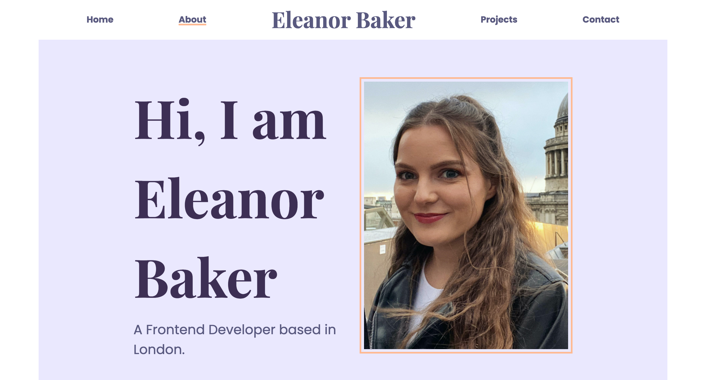

Future Fabrics Expo
Represented YKK at Future Fabrics Expo for three consecutive years, planning workshops and seminars, hosting customer meetings on the stand, generating new business leads, and promoting attendance through multi-channel marketing campaigns.
Dead Stock Week
Grew Dead Stock Week from a single event with 65 attendees in 2022 to a full week of programming with 563 attendees by 2024, a 766% increase, through email campaigns, social media, paid advertising, and legal compliance reviews each year.
Salesforce Email Migration
Acted as subject matter expert for migrating email marketing from Mailchimp to Salesforce at YKK Europe, building standardised templates so the whole business could communicate with a consistent voice while tracking analytics on every send.
Calendly Implementation
Managed the research, selection, and implementation of Calendly at YKK Europe, integrating it directly with Salesforce to capture client information automatically and let the team easily share their availability.
Salesforce Lead Routing & Automation System
Built a complete Salesforce Developer Edition org from scratch as a self-directed technical exercise, designing a full role hierarchy and automated lead routing across EMEA, Americas, and APAC for a fast-growing AI company.
Office IT Infrastructure Improvement Programme
Acted as the on-site point of contact for multiple IT improvement initiatives at YKK, gathering requirements and driving recommendations for our office, working under the final approval of the IT team based externally.

'" />Portfolio Website
Designed and built this portfolio from scratch using HTML, CSS, Bootstrap, and JavaScript — including responsive design, filter logic, and modal interactions.
Fynde
Currently building Fynde, a fashion price-comparison app, vibe coding with AI tools like Claude Code to develop the React Native/Expo app end to end, from product search to marketplace matching.

Dictionary App
Interactive dictionary app built with React — search definitions and images simultaneously. Fully responsive and built as a deep-dive into React fundamentals.

Weather App
Responsive weather app showing current conditions and forecasts using live weather APIs with location-based data. Originally built with JavaScript, later converted to React.

YKK DSR Inspiration Booth
Led the Digital Showroom and Inspiration Booth at YKK, coordinating a team across Japan, a UK university, a designer, and an external developer to deliver an interactive digital experience showcasing YKK's products.

AiryString Project
Coordinated an international collaboration with YKK Japan, from specialist training in France through to a week-long series of workshops and an evening launch event for a window display, including managing garment shipments from Japan and machinery delivery throughout.
YKK Accessories Award at Graduate Fashion Week
Planned window displays and celebration events for four winners of the YKK Accessories Award at Graduate Fashion Week across 2021-2024, consistently the most successful and best attended events held, always selling out.

Accessories of Activism (Shelter)
Delivered Accessories of Activism, a charity collaboration with Shelter showcasing artist Jo Cope's 'Where I Lay My Hat' and 'Shoes Have Names' projects, from window display design through to a fully managed launch event and press coverage.
Digital Range Board Automation
Replaced tedious physical range boards with a fully automated digital version during the shift to remote working at the start of the pandemic, auto-pulling live data from the range plan and images from shared folders to keep senior leadership accurate and up to date.
Product Data Management and Cataloguing
Acted as the technical liaison between the buying team and the systems admin team across the databases used by the buying and product team, including VisionPLM, entering and maintaining accurate garment metadata for the Reiss ecommerce website.

Bianca Saunders & Saul Nash Window Display
Planned and promoted an event at the YKK showroom celebrating Bianca Saunders and Saul Nash, two designers who first visited as students and went on to huge success, featuring their work in a dedicated window display.

Unfixed
Planned and delivered Unfixed, an immersive exhibition exploring design, technology, and ecology at the YKK Showroom, coordinating five external collaborators and a multi-day programme of demonstrations and presentations as part of London Design Festival.

Xavier Brisoux at London Craft Week
Planned and delivered a London Craft Week showcase at the YKK Showroom, featuring a new window display by sculptural knitwear designer Xavier Brisoux and seminars from Brisoux and designer Kei Kagami, coordinating directly with both throughout.

Recall by Kristina Walsh
Planned and delivered a solo showcase of Kristina Walsh's work, identifying and coordinating the fix for a maintenance issue that forced the original event to be rescheduled from the week before Christmas to January.

YKK London Showroom 10 Year Anniversary
Led a multi-faceted anniversary project for YKK's London Showroom, including a 64-page historical booklet, a 5-display window campaign, and a VIP celebration event, before leaving the role partway through delivery.